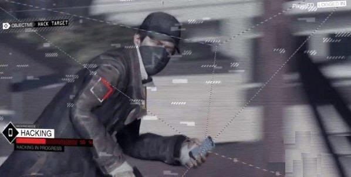
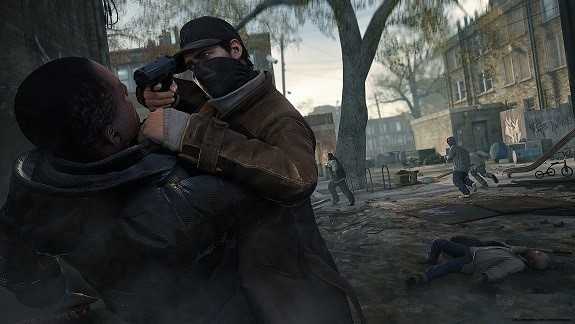
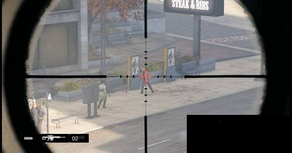
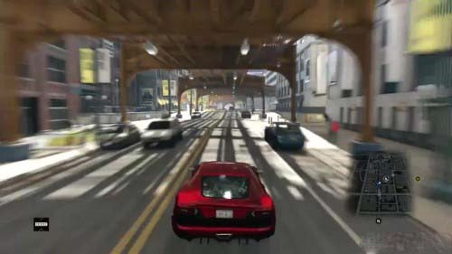
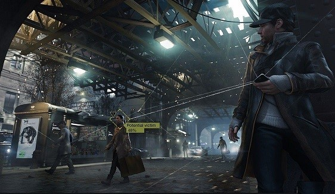
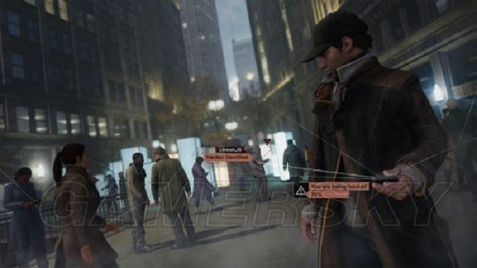
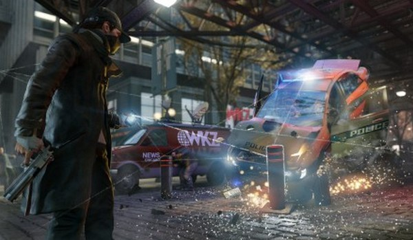
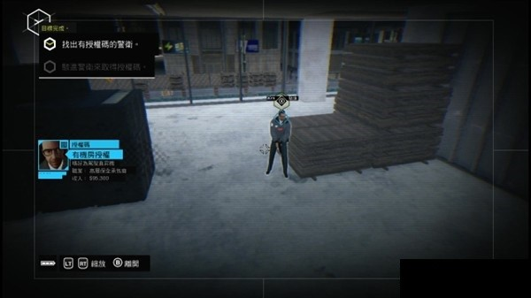
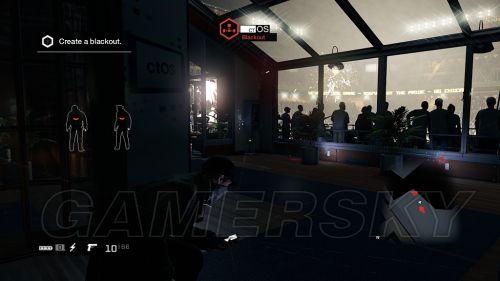

WatchDog
看门狗是谁？
发生的地点以芝加哥城展开，玩家控制一个叫做艾登•皮尔斯的电脑黑客人物，拥有控制和掌握整个城市基础设施的能力。艾登采用的方法是通过对运行数据和电源线并且具有强大功能的计算机来操控这一切。玩家可以通过控制这个人物操控计算机网络中运行的所有电子设备，比如说所在即时位置干扰所有移动电话信号，甚至能够控制交通灯的运行以造成重大车祸。游戏中也具有许多无缝合作。
2003年城市的东北区一次大规模停电是被一个叫做艾登•皮尔斯的黑客引起的，而他也是游戏中的英雄人物，被描述称为一个拥有”拳头和智慧”的人，也是一个高度熟练的黑客英雄角色。
艾登•皮尔斯
艾登•皮尔斯（Aiden Pearce），（也被媒体称为“私法制裁者”和“狡猾的狐狸”）是看门狗 的主角。他是一名技术高超的电脑黑客，能访问芝加哥的CTOS，并且痴迷于监视、保护和控制。他所爱的人在过去曾受过伤害，现在他们又再次受到伤害，因此皮尔斯成了一名致力于阻止这一切的私刑义士。他处于道德的“灰色地带”，既非善，亦非恶。他于1974年5月2日出生于北爱尔兰的贝尔法斯特市，现籍美国。由于非法入侵、持有武器和盗窃罪，现被通缉。他曾经在库克（Cook）郡监狱服刑11个月。
Skill
sneak
艾登所面对的敌人往往数倍与自己，潜行才是一个明智之举。

hit man
虽然现在是火器主导的时代，但近身格斗也是一项必不可缺的技能。

sharp shooter
如果敌人太远，你需要更好的枪法.

boom maker
很多时候主角找不到武器和弹药，只有自制一些炸药玩玩了。
nice driver
现代都市岂有不开车之理。

Telephone Tapping
电话窃听是艾登•皮尔斯他的透析器的一种能力。该能力让皮尔斯可以偷听他人的对话。这个能力需要锁定一个使用手机的对像。锁定之后，如果他们使用它谈话，就可以按下作用按钮来听他们的谈话.

Signal interference
艾登•皮尔斯可以通过他的分析器施展干扰信号的能力。这种能力可以用来干扰手机信号，以此摆脱警察的怀疑，以及其他各种用途。皮尔斯在点联系展览会门口使用这种能力干扰了附近的手机信号，这成功的转移了守卫人员的注意力，皮尔斯得以在无人知觉的情况下偷偷溜了进去。

smart control of public facilities
通过控制和操纵交通灯造成事故，从而以帮助他从各种情况下进行逃跑。

bridage contral
桥梁控制可以让他升起或降下桥梁。这个能力可以用于阻断追兵，艾登可以在通过一座桥之后把它升起。
train control
列车控制可让皮尔斯控制，停止或发动附近的地铁列车, 让他可以很方便地搭乘。
Camera Hack
对公共CTOS摄像头的骇取可以让艾登获取更多的情报并且便于进一步的骇入。

ATM Hack
对公共场合的ATM取款机进行骇取，可以得到金钱，当然前提是你得有市民的信用卡资料。
black out
大停电可以造成一个区域内的所有电力设施的挂机，并且CTOS也会停止工作，通常被用来摆脱警察或者用来布下埋伏

我想说的话
皮尔斯拥有知识和他的技能，所以他可以解决自己的麻烦，和别人的麻烦，他的亲人被伤害，于是他发誓报复，他知道敌人十分强大和狡猾，依靠司法体系只会是徒劳的浪费时间而已，只有使用自己的手段去惩罚恶人才行之有效。这让我联想到马龙白兰度所饰演的考利昂老头子，考利昂并不认为在现实的公开社会有什么“公平”可言，只要大人物们依然在密室里窃窃私语，那么弱势的人们就永远无法真正的获得“公平，正义”，他使用‘西西里’式的情义互相帮助，发展自己的盟友，他既不会被虚伪的法官困住手脚，也不会被同行的子弹夺取生命，在此之后，他更是掌握了庞大的资源，他的公文包里塞满了政界人物的名片，他有一句名言：“我不愿到公开世界中去接受那些权贵的愚弄，我会现在地下世界里积蓄足够的力量。”